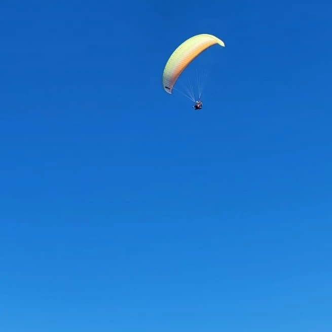
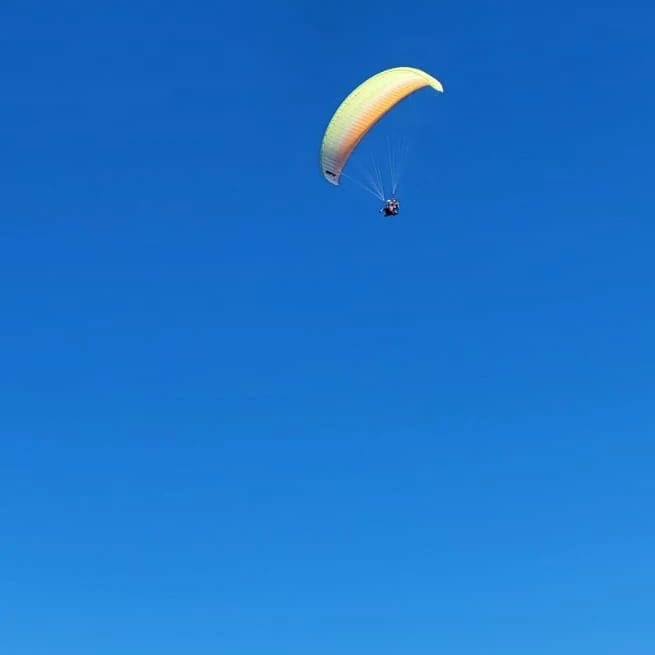

Historia del vuelo en parapente
La historia del parapente empieza a principios de los 60,
cuando ingenieros de la NASA diseñaron paracaídas con
campanas semi-esféricas y celdas inflables para así recuperar
las cápsulas espaciales.
Más tarde, en 1978 paracaidistas
franceses empezaron a despegar de laderas para entrenar
los aterrizajes. Poco a poco, empezaron a modificar los
paracaídas para lograr más planeo y mejor prestaciones.
Y, así fue como los montañeros descubrieron que la
forma más rápida de descender las montañas era despegando
desde las cumbres. Hoy en día los parapente siguen evolucionando
mejorando el planeo, los materiales y la seguridad.

 

Experinecia de Vuelo
Estamos en el aire, no hemos notado ninguna caída si no que el suelo se ha separado de nuestros pies y
hemos pasado de estar corriendo a estar volando.
Los nervios ya no están, han sido sustituidos por
una
sensación de paz y relajación totalmente abrumadora, tanto que incluso nos olvidamos de nuestros
problemas.

Por cualquier consulta
comunicarse al 294421446